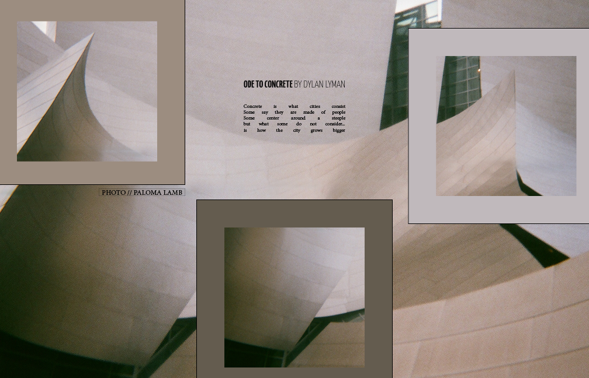
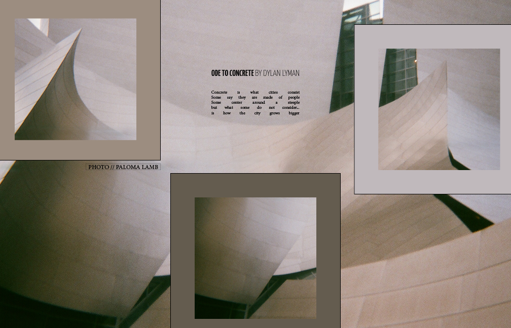
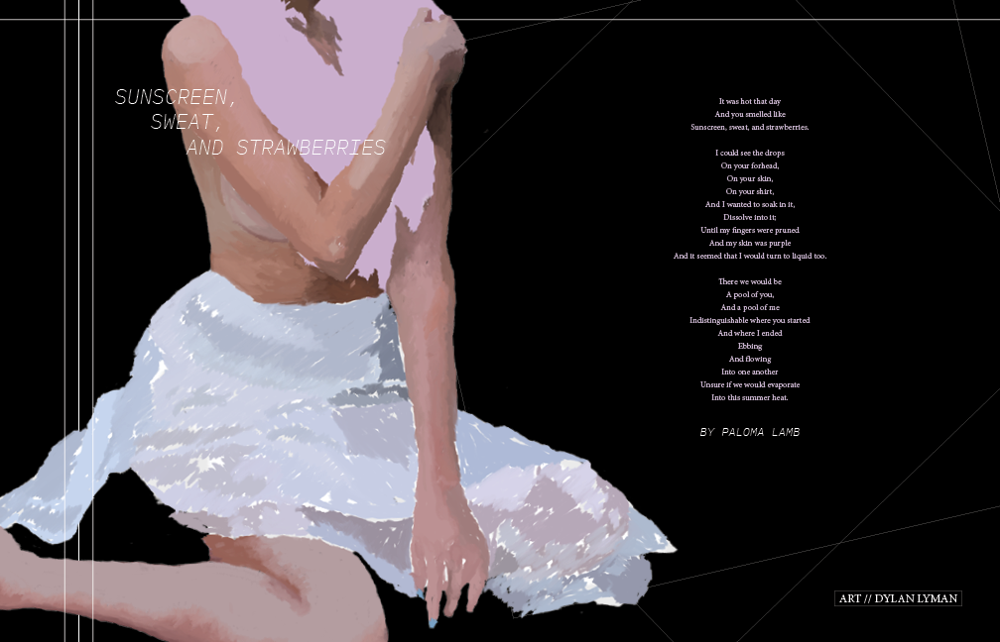

Ode To Conrete
BY: DYLAN LYMAN AND PALOMA LAMB
A submitted bi-fold layout for The Catalyst Literary Arts Magazine. Poetry and Layout by Dylan Lyman. Photography by Paloma Lamb.
A submitted bi-fold layout for The Catalyst Literary Arts Magazine. Poetry and Layout by Dylan Lyman. Photography by Paloma Lamb.
A published bi-fold layout for The Catalyst Literary Arts Magazine. Art and layout by Dylan Lyman. Poetry by Paloma Lamb.
In a valley surrounded by tall grey and white mountains of old, a bear and her two cubs inhabit a small cave. She has cared for her dear cubs for over a year now and it is their second summer. She has luckily kept her two cubs alive. Many of a mother bear’s cubs won’t make it past their first year, but Mother Bear’s cubs couldn’t be healthier.
One day, as any other day, Mother Bear wakes to the bright morning rays. She checks for her two babies. One of the cubs has snuggled its way to Mother Bear’s front paws. Unfortunately, however, one is missing. Mother Bear is sent into a spiral of fear. He mustn’t have gone far from the den. The first chore of the day is to go off in search of the lost cub. Sister cub is still asleep on her opposite side. The small cub opens her eye to the morning’s rays peering through the den’s entrance. Even with a missing cub, Mother Bear must still take care of her other cub. Without Mother Bear, the little cub will not survive. There are far too many dangers beyond the den for the small cub to fall prey to. The small cub senses that Mother Bear is distraught. She climbs out of the den with her mother.
Outside the summer sun has risen above the peaks. It shines down on the two bears, its precious warmth is what life here in the valley relies so heavily on. The Mother Bear and her cub make their way down the hillside toward a group of bushes clustered near a creek. Mother Bear knows this is where the cub would go if it were hungry. The red berries are plump and juicy on the stems of the bushes. There is no sign of the lost cub but a faint scent, it is the right direction. Mother Bear and sister cub munch on some of the foliage and berries; always keeping their minds on food for the winter hibernation.
After their morning meal, it is off to continue the search for Brother Bear. Mother Bear knows this valley better than her small cubs and she understands the dangers that lie in wait. She knows that one of these dangers is the river that snakes its way through the quaint alpine valley. So, by mother’s command, they both make their way further down the hillside. They walk through the towering redwoods and pines that dominate the landscape. If brother were to have wondered off from the den and the berry bushes, then he must have decided to grab a drink or more food down at the river.
As the two reach the edge of the river, its water meandering downstream, ice still lingering near the edges, they find that there is no sign of Brother Bear. Mother Bear smells the air, searching for the faintest smell of her lost cub, but without any luck. It does, however, seem that Brother Bear has been here. She smells the earth by her giant paws. Brother Bear must have been here recently. What she also smells though worries her. The scent of a male black bear intertwines with the scents of the valley. She concludes he must be near. Now it is more imperative than ever to locate Brother Bear, for fear that the other male bear might have killed him.
The valley being as beautiful as it is and so bountiful in life, it is also attractive to humans, perhaps the most dangerous animal to Mother Bear and her cub. Every summer season, they flock to her valley in droves. Their cars speed up and down the roads that encircle parts of the valley. To the Mother Bear, the cars are unknown objects that kill her kin, they are the biggest bears of all. With the humans, comes the rangers, they trap the bears in long cylinders with bait at one end to tag and release the bears elsewhere in the valley. These traps she knows very well. Her tag hangs from her right ear, red with a number on it.
Mother Bear and her cub trudge through the water on the bank of the river. They make their way down the embankment, further into the valley. With the roar of the water fall ahead of them, Mother Bear draws onto another scent. This scent is one that she hasn’t smelled in a long time and when she had smelled it, it was a faint memory of the animal; having passed long before she arrived. As they reach the top of the waterfall, Mother Bear decides that it is time to cross the river. The mother and her cub carefully balance on the biggest rocks jutting out of the river rapids. The two bears now teetering on the rocks contemplating the next leap, notice something lurking out from the shrubbery near the tree line. Mother Bear smells the scent of that other animal now stronger than ever. From out of the tree line comes a mountain lion, cautiously lurking towards the water for a drink. He is weary of Mother Bear but the cub is closer and looks to be an appetizing meal. One catch like that and he wouldn’t have to hunt for the rest of the day. Mother Bear senses the immediate danger her cub is in. The lion laps up water from the river with his tongue keeping an eye on the young cub making its way toward the shore. It is too late for the two bears to turn back now. With the strong current of the river, the cub isn’t strong enough to swim safely to shore, so it must carefully leap its way toward the lion. Mother Bear senses the urgency of the situation and would do anything to save her cub and with a last minute decision, she jumps from her rock and swims rapidly to shore. In the same moment, the lion starts for the small cub just now reaching the shore. As he creeps forward to pounce, Mother Bear growls a monstrous roar and swipes at the lion. The lion swings his body mid-air to face the enraged bear. When he realizes he doesn’t stand a chance against the large bear, he slowly recedes into the woods, no match for the ferocious Mother Bear.
With the successful standoff, Mother Bear and her cub make their way towards the road that winds through the forest of the valley. Through the underbrush of the forest Mother Bear notices the all-too-familiar ranger trap parked on the side of the road. It is possible that her young cub was trapped by the rangers and she moves forward to investigate carefully. She approaches the long cylinder perched on a trailer. She moves to the open end of the trap and stands on her back legs to peer into the dark cylinder. No sign nor scent. The food within the trap is tempting but Mother Bear is too familiar with the contraption to fall for it again. Her and her cub are not hungry enough but other bears who have not been so lucky today have caught on to the scent. A large male bear creeps from the other side of the road. It is the male bear she smelled earlier. Her cub must be near. The two bears are in a standoff.
He is much larger than Mother Bear. The male bears are aggressive beasts and he has been eating far more than she has. She has had two cubs to take care of for the past year and they have taken a toll on her consumption. She has been far luckier than most bears, however, successfully providing for the two cubs and still retaining her own girth. The male bear makes his intent known, he wants that food. He charges Mother Bear and her cub. Mother Bear stands her ground taking a chance that it’s a bluff. The male is a force to be reckoned with as he charges at the bear but it is just a bluff. He halts in front of Mother Bear and gives a roar at the female to back off and she does. It isn’t worth it today.
Dusk has fallen on the valley as the duo make their way towards a campground. Mother Bear knows that many calories can be found within the campgrounds of the valley. She has grown up with this food source as a crutch for when food is rare elsewhere. If she is to have successful offspring she has to teach the young cub to find food there. The journey is quite far from their den and the energy spent to get there makes it a gamble. If she isn’t able to make up for the journey and be able to feed the both of them sufficiently she might die. By now she has given up hope for her missing cub and must focus on her other cub. With a large male around, it is likely that the cub was eaten. They both slowly make their way through the valley floor.
By sunset they make it to the campground. Most of the humans have fallen asleep in their various tents and motorhomes. Mother Bear and her cub both have furry paws that make them nearly silent in the night. They are effective thieves. They start rummaging through the left out food scraps that campers so carelessly forgot to put into the bear boxes. After they have gorged themselves full on the camper’s leftovers, Mother Bear and her cub make their way through the campground heading back out. For both of them it has been an exceptionally long day. The early search for brother has been an unexpected journey. But as hope was finally lost and the day over, suddenly, Mother Bear sniffs the air at a scent that seems to be the scent of her missing cub. She calls out for the cub giving away their presence in the campground. Some of the people in their tents move around and some lights come on in the trailers.
Ranger Mark Oliver slowly drives down the road towards one of the park’s campgrounds for his nightly rounds. He has worked in the park for over twenty years and is a seasoned veteran of the wilderness. He has seen a lot of the animals over the years and has become attached to the wildlife of the valley as he would family. He turns on some soft music as he makes his way through the valley from the ranger station. He yawns. Today was quite an active day for him. He had successfully trapped a large male bear earlier today and was excited to see such a healthy bear. Lately he has been keeping track of them since many of the valley’s bears were starving from dependence on camper food and trash. His radio crackles and a voice comes over the speaker.
“Hey Mark, we got a call from a concerned camper over by site 60 and we need you to check it out. They think there might be a bear stuck in one of the garbage boxes again.”
“Alright, we should really look at getting more bear proof locks for those things.” Mark sighs, shaking his head.
“Agreed. Thanks. See ya back at base.” The operator disconnects with a click.
Mark makes his way to the suspect garbage box and gets out of his truck. He grabs a flashlight out of his belt and a two-by-four from the bed of the truck. He walks over to the box cautiously, listening for the bear. With his head cocked towards the box he can hear the bear inside moving amongst the trash. “I’m here buddy.” Mark says to the trapped bear. “I’ll getcha outta there.” He knocks on the metal side to make sure the bear is awake. He hears a rumbling from movement inside. He opens the door of the garbage box, resembling a large post office drop box and sticks the piece of wood down into the box. He can feel the bear grab onto the wood and make his way out. After a few frustrating minutes the little cub drops out onto the ground. Mark slowly pulls back to give the cub space to escape. “Go on little buddy. You’re free.” The small cub stumbles a bit a runs off into the dark of the forest across the road. Mark locks the garbage and returns to his truck. He sits at the wheel and enjoys the small things in his job that makes him so happy.
Mother Bear and her cub wait in the shadows of the forest waiting for the ranger to drive away—her cub wondering towards the forest. Mother Bear calls out to the young cub. She is happy to see him after a long day of searching. The mother bear and her two cubs back up the valley, away from the campgrounds and into the safety of their den. The two cubs snuggle up to Mother Bear and close their eyes in the warmth of their mother. The valley is dark and quiet waiting for another day. ☉